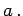

Eine ganze Zahl heißt in durch eine ganze Zahl a ohne Rest teilbar, wenn es eine ganze Zahl q gibt, die die Bedingung
qa=b
(5.236)
erfüllt. Dabei ist a ein Teiler von b in und q der zu akomplementäre Teiler; b ist ein Vielfaches von  Für ,,a teilt b `` schreibt man auch Für ,,a teilt b nicht`` kann man schreiben. Die Teilbarkeitsbeziehung (5.236) ist eine binäre Relation in . Analog kann man die Teilbarkeit in der Menge der natürlichen Zahlen definieren.